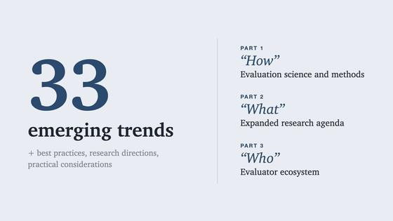
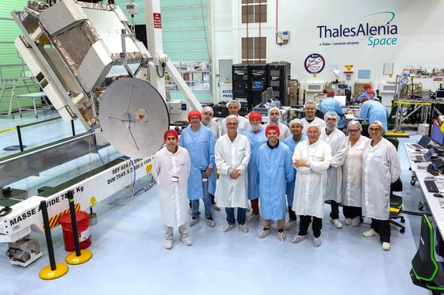
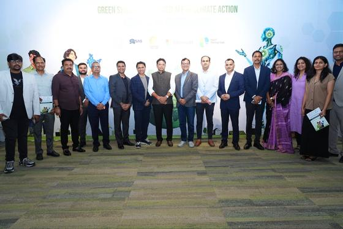

Don't Miss
| arXiv: | 4 days ago · 12m |
| NASA Science: | 3 days ago · 3m |
 NASA’s Hubble Charts Path for Roman with Gravitational Lenses
—
NASA released a Hubble gravitational-lens image as preparatory work for the Nancy Grace Roman Space Telescope. The foreground elliptical galaxy is about 4.5 billion light-years away; the magnified background galaxy is about 8 billion light-years away and appears as two arcs. NASA says Hubble images are helping refine a computer model for analyzing distortions and dark matter in Roman’s wider survey.
NASA’s Hubble Charts Path for Roman with Gravitational Lenses
—
NASA released a Hubble gravitational-lens image as preparatory work for the Nancy Grace Roman Space Telescope. The foreground elliptical galaxy is about 4.5 billion light-years away; the magnified background galaxy is about 8 billion light-years away and appears as two arcs. NASA says Hubble images are helping refine a computer model for analyzing distortions and dark matter in Roman’s wider survey.
| Nature: | · 8m |
 The Emerging View on the Origin and Early Evolution of Eukaryotic Cells
—
A milestone synthesis reviewing phylogenetic, biochemical, and cellular evidence for the origins of eukaryotes. Synthesizes data placing the host within Asgard archaea and analyzes the metabolic interactions that stabilized the ancestral mitochondrial endosymbiont.
The Emerging View on the Origin and Early Evolution of Eukaryotic Cells
—
A milestone synthesis reviewing phylogenetic, biochemical, and cellular evidence for the origins of eukaryotes. Synthesizes data placing the host within Asgard archaea and analyzes the metabolic interactions that stabilized the ancestral mitochondrial endosymbiont.
| Yahoo Finance Calendar: | yesterday · 2m |
| Times of India: | yesterday · 3m |
| GitHub Changelog: | 2 days ago · 2m |
 GitHub Copilot in Teams can turn issue notifications into pull requests
—
GitHub's consolidated Teams app lets users act on issue notifications with Copilot: mention `@GitHub` to investigate a bug report, make a fix, and create a pull request in the conversation. Existing notification capabilities remain. GitHub says the legacy app will retire on November 16, 2026, so users need the consolidated app to continue using Copilot in Teams.
GitHub Copilot in Teams can turn issue notifications into pull requests
—
GitHub's consolidated Teams app lets users act on issue notifications with Copilot: mention `@GitHub` to investigate a bug report, make a fix, and create a pull request in the conversation. Existing notification capabilities remain. GitHub says the legacy app will retire on November 16, 2026, so users need the consolidated app to continue using Copilot in Teams.
Industry Watch
Audits expose oracle flaws in agent benchmarks, while coding tools extend in-conversation pull-request automation and trace-level evaluators.
| arXiv: | 4 days ago · 12m |
| arXiv / Stanford University: | Oct 15 · 10m |
| arXiv: | Oct 2 · 18m |
| AI as Normal Technology: | 6 days ago · 8m |

A Princeton-led survey maps 33 trends in agent evaluation — A Princeton-led survey maps 33 trends across evaluation methods, the scope of what is measured, and the evaluator ecosystem. It argues that an agent score depends on its scaffold, tools, and environment as well as its model, and that sound evaluation should inspect trajectories, account for grader reliability, and test behavior in deployed contexts. It is a field map and set of research recommendations, not a new benchmark result.| GitHub Changelog: | 2 days ago · 2m |
GitHub Copilot in Teams can turn issue notifications into pull requests
—
GitHub's consolidated Teams app lets users act on issue notifications with Copilot: mention `@GitHub` to investigate a bug report, make a fix, and create a pull request in the conversation. Existing notification capabilities remain. GitHub says the legacy app will retire on November 16, 2026, so users need the consolidated app to continue using Copilot in Teams.
| Pydantic AI GitHub releases: | yesterday · 7m |
 Pydantic AI 2.61 adds hosted MCP authentication and citation support
—
Pydantic AI 2.61.0 adds async `auth` functions for hosted MCP capabilities, structured citations in `TextPart`, and citation normalization for Bedrock, OpenRouter, and xAI. It also hardens `InputGuardrail` prompt redaction to close fail-open paths. The changelog groups these with realtime, durable-run, and framework fixes.
Pydantic AI 2.61 adds hosted MCP authentication and citation support
—
Pydantic AI 2.61.0 adds async `auth` functions for hosted MCP capabilities, structured citations in `TextPart`, and citation normalization for Bedrock, OpenRouter, and xAI. It also hardens `InputGuardrail` prompt redaction to close fail-open paths. The changelog groups these with realtime, durable-run, and framework fixes.
| GitHub Changelog: | 2 days ago · 3m |
 GitHub Copilot metrics now attribute model usage to tools such as OpenCode
—
GitHub added a `totals_by_client` array to Copilot usage reports, breaking model requests and token usage down by client for 1-day and 28-day reporting windows. Recognized clients include OpenCode, Claude Code, and Codex. The API counts successful model requests, not prompts, and also reports sessions and model-selection modes.
GitHub Copilot metrics now attribute model usage to tools such as OpenCode
—
GitHub added a `totals_by_client` array to Copilot usage reports, breaking model requests and token usage down by client for 1-day and 28-day reporting windows. Recognized clients include OpenCode, Claude Code, and Codex. The API counts successful model requests, not prompts, and also reports sessions and model-selection modes.
| Anthropic Claude Code changelog: | 2 days ago · 5m |
| ServiceNow Press Room: | 2 days ago · 5m |
| Microsoft Official Blog: | 5 days ago · 4m |
| LangChain: | Sep 10 · 5m |
 Build an Online LLM-as-a-Judge with the LangSmith CLI and a Coding Agent
—
Walkthrough demonstrating how to configure online evaluators using the LangSmith CLI and coding agents. Shows how to inspect agent traces in production, define evaluation rubrics with structured output schemas, and score streaming tool invocations.
Build an Online LLM-as-a-Judge with the LangSmith CLI and a Coding Agent
—
Walkthrough demonstrating how to configure online evaluators using the LangSmith CLI and coding agents. Shows how to inspect agent traces in production, define evaluation rubrics with structured output schemas, and score streaming tool invocations.
| LangChain: | Sep 12 · 15m |
 Introduction to Evaluating AI Agents with LangSmith
—
Covers foundational principles of evaluating multi-step AI agents: setting up golden datasets, measuring trajectory-level tool accuracy, detecting hallucinations in intermediate thoughts, and tracking regression metrics across prompt revisions.
Introduction to Evaluating AI Agents with LangSmith
—
Covers foundational principles of evaluating multi-step AI agents: setting up golden datasets, measuring trajectory-level tool accuracy, detecting hallucinations in intermediate thoughts, and tracking regression metrics across prompt revisions.
Markets and Money
| Bloomberg: | yesterday · 4m |
| TheStreet Pro: | yesterday · 3m |
| The Wall Street Journal: | yesterday · 4m |
| The Economic Times: | yesterday · 4m |
 Nifty 50 and Sensex Close Firm Ahead of Festive Diwali Season with Strong DII Support
—
The Nifty 50 finished Friday trade up 140 points at 24,850, led by gains in private banking and automotive stocks. Domestic Institutional Investors recorded net inflows of Rs 3,200 crore, absorbing foreign portfolio sales ahead of Samvat 2083 festive sessions.
Nifty 50 and Sensex Close Firm Ahead of Festive Diwali Season with Strong DII Support
—
The Nifty 50 finished Friday trade up 140 points at 24,850, led by gains in private banking and automotive stocks. Domestic Institutional Investors recorded net inflows of Rs 3,200 crore, absorbing foreign portfolio sales ahead of Samvat 2083 festive sessions.
| Reserve Bank of India: | 2 days ago · 3m |
| The Hindu BusinessLine: | yesterday · 4m |
 Capital Goods and Power Equipment Manufacturers Maintain Healthy Margins in Q2
—
Second-quarter results from leading engineering and transmission equipment firms showed revenue growth of 14% to 18% year-on-year, supported by national grid upgrade contracts and industrial capex.
Capital Goods and Power Equipment Manufacturers Maintain Healthy Margins in Q2
—
Second-quarter results from leading engineering and transmission equipment firms showed revenue growth of 14% to 18% year-on-year, supported by national grid upgrade contracts and industrial capex.
| Yahoo Finance Calendar: | yesterday · 2m |
| BSE India Official: | 2 days ago · 2m |
| New York Stock Exchange: | yesterday · 2m |
| Bloomberg Television: | 2 days ago · 3m |
 Hidden Rallies Emerge From Tech Selloff: Market Analysis
—
Bloomberg market correspondents analyze internal breadth in US equities, highlighting rotations from mega-cap tech into utilities, industrial infrastructure, and financial sectors. Explores how Treasury yield stability around 4.2% is shaping risk premiums.
Hidden Rallies Emerge From Tech Selloff: Market Analysis
—
Bloomberg market correspondents analyze internal breadth in US equities, highlighting rotations from mega-cap tech into utilities, industrial infrastructure, and financial sectors. Explores how Treasury yield stability around 4.2% is shaping risk premiums.
| Bloomberg Television: | 4 days ago · 96m |
 SpaceX Results Reignite AI Trade, Meta Results on Deck
—
Examines quarterly earnings momentum in datacenter hardware, power supply chain logistics, and cloud capex expectations ahead of upcoming Big Tech reports from Alphabet, Microsoft, and Meta.
SpaceX Results Reignite AI Trade, Meta Results on Deck
—
Examines quarterly earnings momentum in datacenter hardware, power supply chain logistics, and cloud capex expectations ahead of upcoming Big Tech reports from Alphabet, Microsoft, and Meta.
Latest Radar
Mitochondria: the strongest origin story in biology—and its open questions
Executive Takeaways
- Mitochondria descend from a bacterial endosymbiont: their genomes, gene histories and integration into host cells make this conclusion far stronger than any single resemblance.
- The archaeal side of the story is increasingly associated with Asgard archaea, but the identity and biology of the actual host remain unresolved.
- A growing body of dated gene-duplication work supports a complex archaeal host before mitochondrial integration, while new reconstructions disagree about how much other bacterial gene flow mattered.
- Modern Asgard archaea provide testable analogies, not preserved intermediates or direct stand-ins for the ancient ancestors.
A leap from evaluating AI agents to the origin of complex life may sound like a change of scale, but it is the same kind of reasoning problem: infer an unobserved process from imperfect traces, then ask which alternative explanations those traces actually rule out. Mitochondria are an unusually good case. The core claim—that they descend from bacteria that entered into a lasting relationship with another cell—is among the most secure ideas in cell evolution. The more ambitious claim, that we know how this event created the eukaryotic cell, is not. New work published in 2025 and 2026 has made that distinction especially useful: one study dates the assembly of cellular complexity and places mitochondrial integration late; another finds evidence for a succession of microbial gene exchanges, but cannot establish that every donor was a resident symbiont. The organelle’s origin is clear enough to teach from; the transition that produced the cell containing it remains a live research problem. [1][6][8][11]
1. What makes the endosymbiosis case strong
A mitochondrion is not just a cellular battery. It is a compartment with its own genome, ribosomes and protein-making system, bounded by membranes, and it reproduces by growth and division within its host. Most proteins that now work in mitochondria are encoded in the cell’s nucleus and imported into the organelle. This combination—a bacterial-style genetic remnant plus profound dependence on the host—is what a long evolutionary integration should leave behind. It is not a single decisive feature; the inference comes from several independent kinds of evidence converging. [1][10]
One line of evidence is sequence ancestry. Mitochondrial genes for components of energy conversion and translation group with bacterial genes, especially those associated with Alphaproteobacteria, rather than with archaeal genes. Mitochondrial genomes have also been drastically reduced: many genes were lost, while others moved to the host nucleus. A transferred gene is useful to the organelle only if its protein can still reach it, so the modern system of protein import is part of the historical signature, not a mere accessory. The last common ancestor of living eukaryotes already had mitochondria, including lineages whose present mitochondria are highly reduced or modified; absence of a familiar, oxygen-consuming organelle today does not establish an ancestrally mitochondria-free cell. [1][2][7]
The analogy to an old software system is imperfect but helpful: an integrated component can retain an internal codebase while depending on its host for most operations. The analogy stops there—organelles reproduce biologically, and evolution has no engineer or migration plan—but it helps separate two questions. Did a bacterial lineage become an organelle? The combined phylogenetic, genomic and cellular record says yes. Which exact modern bacterium resembles the ancestor most closely, and what happened before and during the merger? Those are different questions, with much weaker answers. [1][2]
2. The bacterial ancestor is real; its modern cousin is elusive
It is tempting to label the mitochondrial ancestor as a particular living group of bacteria. That is where the tree becomes less certain. In a 2018 Nature study, Martijn and colleagues added 12 divergent alphaproteobacterial clades, including genomes recovered from ocean metagenomes, and used analyses designed to reduce long-branch attraction and compositional bias. Their trees placed mitochondria on a proteobacterial branch that split before the sampled Alphaproteobacteria, rather than inside a then-recognized alphaproteobacterial order. [2]
This finding does not undo bacterial ancestry. It says that the closest sampled organisms may not include the closest surviving relatives of the ancestral lineage. Deep evolutionary trees are sensitive to which organisms are sampled, which genes are compared and how sequence changes are modelled. Mitochondrial genomes are also unusually reduced and have evolved under their own constraints; their surviving genes are a non-random, very small sample of the ancestor’s repertoire. [1][2]
Think of trying to identify an extinct language from a handful of words after two billion years of sound change, borrowing and loss. A tree can robustly tell us that one set of words shares ancestry with a language group, while still failing to identify the nearest surviving dialect. Here, the broad bacterial relationship is much more stable than the precise branching position or the metabolic habits of the proto-mitochondrion. For the article’s central question, that distinction matters: certainty about an endosymbiotic origin does not automatically identify the first partner or establish why it was retained. [1][2]
3. The host clue: Asgard archaea, not a time capsule
The other major contribution to the eukaryotic cell appears archaeal. Eukaryotes share features of information processing—such as components of DNA replication, transcription and translation—with archaea. The discovery of Asgard archaea, a diverse group whose genomes contain many proteins once thought characteristic of eukaryotes, narrowed the search for the host lineage. Some of these proteins are linked to cytoskeleton, membrane remodelling and intracellular transport. [1][3][7]
But genomic relatives do not give us a fossil snapshot of the host. A 2021 analysis expanded the Asgard dataset to 162 complete or near-complete genomes, including 75 newly reconstructed metagenome-assembled genomes. Its results supported either eukaryotes branching from within Asgard or a deeper position in the archaeal tree, depending on marker and dataset choice; the authors did not claim the exact relationship was settled. That is a useful example of how an apparently simple tree question can hinge on a single marker or on uneven sampling of uncultivated organisms. [3]
The 2026 study by Tobiasson and colleagues used constrained phylogenetic tests on thousands of conserved eukaryotic protein clusters. In its high-confidence core analysis, Asgard accounted for half of the aggregate expected-likelihood weight across more than 4,000 data points. Alphaproteobacterial ancestry was more concentrated in mitochondrial energy-conversion systems and iron–sulfur-cluster machinery. This supports an Asgard-like cellular scaffold that acquired a bacterium with a specialized energy role; it does not mean that half of the organism, its genes or its history can literally be assigned to Asgard. The percentage describes a particular model-comparison statistic over selected protein families. [7]
4. Cultured relatives turn speculation into questions
The strongest way to test a proposed ancestor would be to observe it. That is impossible here, so researchers have made a different advance: culturing and imaging modern Asgard archaea. In 2020, Imachi and colleagues reported the first isolated Asgard archaeon, Prometheoarchaeum syntrophicum MK-D1, from deep marine sediment. The work required more than 2,000 days in a methane-fed enrichment system; the organism grew slowly, with an estimated doubling time of roughly 14–25 days, and depended on microbial partners. The team described a small cell with long, often branching protrusions, but no visible organelle-like structures. [4]
That result made a syntrophic scenario—one in which microbes exchange metabolites such as hydrogen or formate—biologically concrete. It did not show that MK-D1 is an ancestor, that its present-day partners resemble the mitochondrial precursor, or that protrusions were a mechanism for engulfing a bacterium. The authors explicitly described their eukaryogenesis model as hypothetical. This restraint is important: the organism is a comparative model separated from the relevant ancestors by vast time and evolution, not a surviving missing link. [4]
A second Asgard enrichment, Lokiarchaeum ossiferum, added a different observable constraint. Cryo-electron tomography revealed branched cell protrusions and a long-range cytoskeleton; structural and immunostaining evidence identified filaments consistent with an Asgard actin homologue. The work supports the idea that an archaeal ancestor could have had more cellular architecture than the old picture of an inert, featureless prokaryote. Yet the authors did not observe the cell engulfing a partner or building a nucleus. Extant cell biology tells us which mechanisms are plausible and which are not yet seen; it cannot by itself decide the sequence of events in eukaryogenesis. [5]
5. When did the mitochondrion arrive?
The central disagreement is not whether mitochondria came from bacteria, but whether the mitochondrial partnership preceded the features that make a cell recognizably eukaryotic or joined a lineage that had already begun to acquire them. In the mitochondria-early hypothesis, the partnership changes the host’s energetic possibilities and helps drive cellular complexity. In mitochondria-late accounts, an archaeal lineage accumulated features such as cytoskeleton and membrane trafficking first, with mitochondrial integration occurring later. A 2020 syntrophy model goes further, proposing a bacterial host for an archaeon and then a later mitochondrial endosymbiont; this addresses the mismatch between archaeal and bacterial membrane chemistry, but remains a model, not a directly observed history. [1][9]
A Nature paper published in December 2025 used dated gene duplications to infer a timeline. Its relaxed molecular-clock analysis placed the divergence of the nuclear eukaryotic lineage at about 3.05–2.79 billion years ago, the bacterial lineage associated with mitochondria at about 2.37–2.13 billion years ago, and the last common ancestor of living eukaryotes at about 1.80–1.67 billion years ago. Duplications in many archaeal-derived genes predated mitochondrial integration, while the early duplication of alphaproteobacterial-derived genes was interpreted as evidence that the symbiosis was underway by roughly 2.2 billion years ago. The authors therefore favoured an archaeal host with complex features before the mitochondrion arrived. [6]
Those are estimates, not timestamps from a fossilized merger. The study dates gene-duplication nodes using a calibrated species tree and then uses the inferred functions of the resulting copies to reconstruct the order of cellular innovations. It cannot date the endosymbiotic event directly; it infers a window from the history of genes that became involved in mitochondrial import, function and integration. Calibration choices, gene histories and the correspondence between duplication and a newly acquired function all matter. The work makes a late-mitochondrion scenario testable and quantitatively constrained, but does not make it an observation. [6]
6. A current disagreement—and what would resolve it
Two 2026 studies illustrate why the field should not compress a complex reconstruction into a single settled cartoon. Tobiasson and colleagues’ January analysis emphasized a dominant Asgard contribution to eukaryotic gene systems and treated alphaproteobacterial ancestry as relatively concentrated in mitochondrial functions. Bernabeu and colleagues, in a June Nature study, used a different reconstruction of the last eukaryotic common ancestor’s protein set and phylogenies expanded against broad bacterial and viral databases. They reported additional bacterial signals, including Myxococcota and Planctomycetota, and a viral signal involving giant-virus relatives; they estimated that the two named non-alphaproteobacterial groups contributed 3.92% and 2.24% of the reconstructed ancestral proteome, respectively. [7][8]
These results do not simply cancel each other out. They differ in the proteins included, how ancestral families are reconstructed, what counts as a well-supported phylogenetic sister group, and how horizontal transfers are filtered. Nor does a bacterial-looking gene prove that a whole bacterium lived inside the ancestor: it may have moved through ordinary horizontal gene transfer, an endosymbiont, a virus, or a chain of interactions. Bernabeu and colleagues explicitly note that their data cannot identify whether the proposed microbial partners were endosymbiotic, external or otherwise associated. Their result supports a more complex microbial context, but it does not establish serial endosymbioses as fact. [7][8]
The stable core is therefore narrower—and stronger—than a complete origin story. Mitochondria descend from bacteria; the host lineage is archaeal and closely associated with Asgard; the last common ancestor of living eukaryotes already had mitochondria and extensive cellular complexity. Still open are the exact host lineage, the exact position of the mitochondrial ancestor among poorly sampled bacteria, the order in which cell architecture and symbiosis emerged, how membranes changed, and how many other microbial gene exchanges shaped the genome. [1][3][6][7][8]
What to watch next. The most informative advances will be less about discovering one magic gene and more about improving the comparison set: more diverse Asgard genomes and cultured species, better sampling of bacterial groups that may be close to the mitochondrial lineage, and reconstructions tested against the same balanced datasets and alternative evolutionary models. On the cell-biology side, researchers need mechanisms that connect observed archaeal traits—protrusions, cytoskeleton and metabolic exchange—to stable intracellular integration, without treating analogy as proof. On the inference side, the key question is which conclusions survive when gene-grouping definitions, taxon sampling and transfer-detection methods change. If those independent lines converge, the timeline will sharpen. Until then, mitochondria offer a rare lesson: one can be highly confident about a merger and still debate what kind of world made it possible. [1][4][6][7][8][9]
- The emerging view on the origin and early evolution of eukaryotic cells — Nature
- Deep mitochondrial origin outside the sampled alphaproteobacteria — Nature
- Expanded diversity of Asgard archaea and their relationships with eukaryotes — Nature
- Isolation of an archaeon at the prokaryote–eukaryote interface — Nature
- Actin cytoskeleton and complex cell architecture in an Asgard archaeon — Nature
- Dated gene duplications elucidate the evolutionary assembly of eukaryotes — Nature
- Dominant contribution of Asgard archaea to eukaryogenesis — Nature
- Gene ancestries reveal diverse microbial associations during eukaryogenesis — Nature
- The Syntrophy hypothesis for the origin of eukaryotes revisited — Nature Microbiology
- Mitochondria and the origin of eukaryotes — Knowable Magazine
- Endosymbiotic theories for eukaryote origin — Philosophical Transactions of the Royal Society B: Biological Sciences
Cosmos and Life
Hubble's gravitational lens models chart survey paths for the Roman Space Telescope, alongside new evolutionary timelines for the eukaryotic proteome.
| NASA Science: | 3 days ago · 3m |
NASA’s Hubble Charts Path for Roman with Gravitational Lenses
—
NASA released a Hubble gravitational-lens image as preparatory work for the Nancy Grace Roman Space Telescope. The foreground elliptical galaxy is about 4.5 billion light-years away; the magnified background galaxy is about 8 billion light-years away and appears as two arcs. NASA says Hubble images are helping refine a computer model for analyzing distortions and dark matter in Roman’s wider survey.
| NASA Science: | 2 days ago · 5m |
 NASA’s Dragonfly Completes First Simulated Flight
—
NASA reports that Dragonfly completed its most comprehensive simulated first flight so far on flight-like computers at Johns Hopkins APL, not on Titan or the actual flight system. The rehearsal combined flight software with simulated camera, inertial-sensor, and lidar inputs for a site-scouting and landing sequence. NASA says tests on the actual flight system and deliberate fault-response trials remain ahead of launch, which is scheduled no earlier than 2028.
NASA’s Dragonfly Completes First Simulated Flight
—
NASA reports that Dragonfly completed its most comprehensive simulated first flight so far on flight-like computers at Johns Hopkins APL, not on Titan or the actual flight system. The rehearsal combined flight software with simulated camera, inertial-sensor, and lidar inputs for a site-scouting and landing sequence. NASA says tests on the actual flight system and deliberate fault-response trials remain ahead of launch, which is scheduled no earlier than 2028.
| European Space Agency: | 5 days ago · 5m |

Lunar Link complete and ready for a new adventure — ESA says Lunar Link completed its major integration and test campaign, including an end-to-end communications demonstration with a simulated user on the Moon. Originally intended for NASA’s Gateway, the system is now in qualification and acceptance review, expected to finish by year-end. ESA is studying whether the completed hardware could be repurposed as an independent communications relay for future lunar missions; its flight hardware will be kept in controlled storage while plans are decided.| WIRED / Quanta Magazine: | yesterday · 9m |
| Nature: | · 8m |
The Emerging View on the Origin and Early Evolution of Eukaryotic Cells
—
A milestone synthesis reviewing phylogenetic, biochemical, and cellular evidence for the origins of eukaryotes. Synthesizes data placing the host within Asgard archaea and analyzes the metabolic interactions that stabilized the ancestral mitochondrial endosymbiont.
| Nature: | Dec 3 · 7m |
 Dated Gene Duplications Elucidate the Evolutionary Assembly of Eukaryotes
—
Using molecular clock analysis on duplicated gene families, researchers reconstruct the timeline of eukaryogenesis. Results suggest that nuclear-cytoskeletal cellular complexity began assembling in an archaeal ancestor prior to endosymbiotic mitochondrial integration roughly 2.2 billion years ago.
Dated Gene Duplications Elucidate the Evolutionary Assembly of Eukaryotes
—
Using molecular clock analysis on duplicated gene families, researchers reconstruct the timeline of eukaryogenesis. Results suggest that nuclear-cytoskeletal cellular complexity began assembling in an archaeal ancestor prior to endosymbiotic mitochondrial integration roughly 2.2 billion years ago.
| Nature / PMC: | 6 days ago · 6m |
 Expanded Diversity of Asgard Archaea and Their Relationships with Eukaryotes
—
Analyzes over 160 metagenome-assembled Asgard archaeal genomes, identifying numerous eukaryotic signature proteins involved in membrane trafficking, vesicle formation, and ubiquitin signaling in uncultivated hydrothermal archaea.
Expanded Diversity of Asgard Archaea and Their Relationships with Eukaryotes
—
Analyzes over 160 metagenome-assembled Asgard archaeal genomes, identifying numerous eukaryotic signature proteins involved in membrane trafficking, vesicle formation, and ubiquitin signaling in uncultivated hydrothermal archaea.
| Nature / PMC: | 7 days ago · 6m |
| Space Telescope Science Institute: | 7 days ago · 73m |
 The Nancy Grace Roman Space Telescope: Construction to Discoveries
—
Dr. Dominic Benford details the wide-field infrared instrument capabilities of the Nancy Grace Roman Space Telescope. Explains how Roman's 100x field of view compared to Hubble enables statistical surveys of gravitational lensing, dark energy, and exoplanet microlensing.
The Nancy Grace Roman Space Telescope: Construction to Discoveries
—
Dr. Dominic Benford details the wide-field infrared instrument capabilities of the Nancy Grace Roman Space Telescope. Explains how Roman's 100x field of view compared to Hubble enables statistical surveys of gravitational lensing, dark energy, and exoplanet microlensing.
| NASA Goddard: | Jul 31 · 3m |
 NASA's Roman Space Telescope Hardware Highlights and Assembly
—
Cleanroom footage showing the optical telescope assembly and wide-field instrument integration for the Roman Space Telescope at NASA Goddard. Highlights thermal vacuum chamber testing and deployable solar array alignments.
NASA's Roman Space Telescope Hardware Highlights and Assembly
—
Cleanroom footage showing the optical telescope assembly and wide-field instrument integration for the Roman Space Telescope at NASA Goddard. Highlights thermal vacuum chamber testing and deployable solar array alignments.
World and India
Multilateral summits in Brussels advance cross-border HVDC grid standards and green methanol maritime shipping corridors.
| BBC News: | yesterday · 4m |
| Deutsche Welle: | yesterday · 3m |
| BBC News: | yesterday · 3m |
| Financial Times: | 2 days ago · 4m |
| The Hindu: | yesterday · 3m |
 Andhra Pradesh orders cyclone readiness and sets irrigation-project priorities
—
Amid a developing Bay of Bengal cyclone threat, Andhra Pradesh’s Chief Minister directed officials to implement a plan covering flood, water and disaster management, and use rainfall to refill reservoirs and irrigation tanks. He called for 36 identified priority projects to be completed to schedule, with all targeted to be operational by December 2028, and ordered Chintalapudi lift-irrigation work to resume next month.
Andhra Pradesh orders cyclone readiness and sets irrigation-project priorities
—
Amid a developing Bay of Bengal cyclone threat, Andhra Pradesh’s Chief Minister directed officials to implement a plan covering flood, water and disaster management, and use rainfall to refill reservoirs and irrigation tanks. He called for 36 identified priority projects to be completed to schedule, with all targeted to be operational by December 2028, and ordered Chintalapudi lift-irrigation work to resume next month.
| The Indian Express: | yesterday · 3m |
 India’s digital agriculture programme reports 11 crore farmer IDs
—
The Indian Express reports that the Digital Agriculture Mission has issued unique digital IDs to 11 crore farmers. The Aadhaar-like identifier is intended to let farmers access government schemes without repeatedly visiting offices or banks or resubmitting the same documents. It is a scale update on India’s effort to use shared digital infrastructure for agricultural records and scheme access.
India’s digital agriculture programme reports 11 crore farmer IDs
—
The Indian Express reports that the Digital Agriculture Mission has issued unique digital IDs to 11 crore farmers. The Aadhaar-like identifier is intended to let farmers access government schemes without repeatedly visiting offices or banks or resubmitting the same documents. It is a scale update on India’s effort to use shared digital infrastructure for agricultural records and scheme access.
| Deccan Chronicle: | yesterday · 3m |

Telangana opens applied-AI and green-skills centre in Hyderabad — Telangana opened a Green Skills & Applied AI Centre of Excellence at Hyderabad’s SAS iTower with Microsoft, 1M1B and the MeitY Startup Hub. The centre will train graduates in applied AI, green pharmaceuticals, solar, electric vehicles and wind; the launch also announced 100 job offers. A linked AI-for-the-city challenge invites young people to develop civic and environmental applications.| The Hindu: | 2 days ago · 3m |
| DW News: | Dec 17 · 85m |
 Global Outlook: The News That Will Dominate International Affairs | DW News Desk
—
DW foreign affairs correspondents explore the shifting geopolitical balance in depth, assessing European industrial competitiveness, global maritime shipping security in vital straits, and multilateral diplomatic summits shaping international trade policy heading into the new year.
Global Outlook: The News That Will Dominate International Affairs | DW News Desk
—
DW foreign affairs correspondents explore the shifting geopolitical balance in depth, assessing European industrial competitiveness, global maritime shipping security in vital straits, and multilateral diplomatic summits shaping international trade policy heading into the new year.
| Al Jazeera English / Counting the Cost: | Dec 26 · 28m |
 What's Next for the Global Economy: Trade Corridors and Energy Transitions
—
Examines global supply chain nearshoring strategies, cross-border clean energy grids, and the expanding impact of sovereign debt dynamics on developing market infrastructure and logistics investments across regional economic corridors.
What's Next for the Global Economy: Trade Corridors and Energy Transitions
—
Examines global supply chain nearshoring strategies, cross-border clean energy grids, and the expanding impact of sovereign debt dynamics on developing market infrastructure and logistics investments across regional economic corridors.
Sports
| BWF World Tour: | yesterday · 3m |
| ATP Tour: | yesterday · 3m |
| ATP Tour: | yesterday · 3m |
| WTA Tour: | 2 days ago · 2m |
| ESPNcricinfo: | yesterday · 4m |
| Premier League: | yesterday · 3m |
| International Cricket Council: | 2 days ago · 3m |
| Formula 1 Official: | Sep 26 · 8m |
 Race Highlights: Azerbaijan Grand Prix Baku City Circuit
—
Official race highlights from Baku's challenging street circuit. Captures high-speed slipstream overtakes along the 2.2 km main straight, tight technical battles through the castle section, and strategic pit-stop decisions under yellow flags.
Race Highlights: Azerbaijan Grand Prix Baku City Circuit
—
Official race highlights from Baku's challenging street circuit. Captures high-speed slipstream overtakes along the 2.2 km main straight, tight technical battles through the castle section, and strategic pit-stop decisions under yellow flags.
| Formula 1 Official: | Aug 23 · 8m |
 Race Highlights: Dutch Grand Prix Zandvoort
—
High-octane wheel-to-wheel motorsport racing along the challenging banked corners of Zandvoort in the North Sea dunes, featuring intense tire degradation battles, variable grip levels, and rapid safety car restarts under changing conditions.
Race Highlights: Dutch Grand Prix Zandvoort
—
High-octane wheel-to-wheel motorsport racing along the challenging banked corners of Zandvoort in the North Sea dunes, featuring intense tire degradation battles, variable grip levels, and rapid safety car restarts under changing conditions.
Keto Kitchen
Daily Keto Protocol (Net Carbs: 19.9g / 25g)
| Net Carbs | Protein | Healthy Fats | Total Calories |
|---|---|---|---|
| 19.9g | 75g | 48g | 837 kcal |
Tomato Guddu Vepudu (Guntur Tomato Egg Fry)
Ingredients
- eggs, beaten (200g)
- ripe tomato, finely chopped (100g)
- onion, finely chopped (20g)
- ghee (8g)
- mustard seeds (1g)
- cumin seeds (1.5g)
Method Summary
- Beat the eggs with half the salt. Chop the tomato and onion finely so the masala reduces quickly.
- Heat ghee in a kadai over medium heat. Add mustard and cumin; when they crackle, add curry leaves and green chilli. Fry about 20 seconds, until the leaves stop spluttering.
- Add onion and fry 2 minutes until translucent with a few golden edges. Stir in garlic for 30 seconds, then add tomato, turmeric and remaining salt. Cook 3 to 4 minutes, pressing the tomato until pulpy and most of its liquid has evaporated.
Gasagasala Kobbari Goat Keema Kura (Poppy-Coconut Goat Mince Curry)
Ingredients
- lean goat mince (300g)
- onion, finely chopped (25g)
- ripe tomato, finely chopped (45g)
- fresh ginger, minced (4g)
- garlic, minced (6g)
- ghee (10g)
Method Summary
- Toast the poppy seeds in a dry pan over low heat for 60 to 90 seconds, shaking often, just until fragrant; do not let them brown. Cool, then grind with 2 tablespoons water to a smooth paste.
- Heat ghee in a kadai over medium. Add cumin and curry leaves; when they crackle and the leaves turn glossy, add onion and green chilli. Fry 3 minutes until the onion has golden edges.
- Add ginger and garlic; stir 30 seconds until aromatic. Add the goat mince and break it into small pieces. Fry 4 minutes, stirring, until it loses its raw colour and the pan gives off a meaty aroma.
Gongura Chepa Vepudu with Curry-Leaf Cauliflower Rice
Ingredients
- catfish fillets, patted dry (300g)
- gongura leaves, picked and chopped (120g)
- cauliflower florets, riced and squeezed dry (300g)
- groundnut oil (10g)
- ghee (8g)
- green chilli, slit (8g)
Method Summary
- Grate the cauliflower to rice-sized pieces, then squeeze it dry in a clean towel. Pat the fish dry and rub with turmeric, chilli powder, lemon juice and half the salt; set aside while the pan heats.
- In a wide skillet, heat ghee over medium-high. Add cumin and curry leaves; once fragrant, tip in the cauliflower and a pinch of salt. Toss over high heat for 3 to 4 minutes until the grains are hot, separate and just tender. Transfer to a covered bowl.
- Wipe the skillet if needed and heat the groundnut oil over medium-high. Add the fish pieces in one layer and sear 3 to 4 minutes per side, turning once, until opaque and flaky. Transfer to a plate.
| Frontiers in Physiology: | 7 days ago · 6m |
 Mitochondrial Bioenergetics and Fatty Acid Oxidation in Nutritional Ketosis
—
A review examining how sustained nutritional ketosis modifies mitochondrial respiration. Ketone body metabolism (specifically beta-hydroxybutyrate) increases the ATP-to-oxygen ratio compared to glucose oxidation, reducing reactive oxygen species production in complex I and supporting cellular mitochondrial biogenesis.
Mitochondrial Bioenergetics and Fatty Acid Oxidation in Nutritional Ketosis
—
A review examining how sustained nutritional ketosis modifies mitochondrial respiration. Ketone body metabolism (specifically beta-hydroxybutyrate) increases the ATP-to-oxygen ratio compared to glucose oxidation, reducing reactive oxygen species production in complex I and supporting cellular mitochondrial biogenesis.
| Frontiers in Molecular Neuroscience: | 6 days ago · 6m |
 Nutritional Ketosis and Mitohormesis: Implications for Mitochondrial Function
—
Details how physiological ketosis triggers beneficial mitohormetic signaling. Transient low-level reactive oxygen species induce adaptive antioxidant enzyme expression (SOD2, catalase) and enhance mitochondrial biogenesis via PGC-1alpha upregulation without oxidative distress.
Nutritional Ketosis and Mitohormesis: Implications for Mitochondrial Function
—
Details how physiological ketosis triggers beneficial mitohormetic signaling. Transient low-level reactive oxygen species induce adaptive antioxidant enzyme expression (SOD2, catalase) and enhance mitochondrial biogenesis via PGC-1alpha upregulation without oxidative distress.
| European Journal of Clinical Nutrition: | Oct 17 · 5m |
 Therapeutic Uses of Very-Low-Carbohydrate Ketogenic Diets Beyond Weight Loss
—
Examines the systemic metabolic benefits of ketogenic diets, including improved insulin sensitivity, favorable HDL-C and triglyceride ratios, and stabilized blood glucose dynamics. Reviews clinical evidence for metabolic endurance and cognitive clarity.
Therapeutic Uses of Very-Low-Carbohydrate Ketogenic Diets Beyond Weight Loss
—
Examines the systemic metabolic benefits of ketogenic diets, including improved insulin sensitivity, favorable HDL-C and triglyceride ratios, and stabilized blood glucose dynamics. Reviews clinical evidence for metabolic endurance and cognitive clarity.
| Frontiers in Nutrition: | Oct 16 · 5m |
 Effects of Ketone Bodies on Brain Metabolism and Mitochondrial Bioenergetics
—
Investigates ketone body uptake across the blood-brain barrier via monocarboxylate transporters. Confirms that beta-hydroxybutyrate provides an efficient alternative substrate that circumvents impaired glucose transport while sustaining neuronal ATP generation.
Effects of Ketone Bodies on Brain Metabolism and Mitochondrial Bioenergetics
—
Investigates ketone body uptake across the blood-brain barrier via monocarboxylate transporters. Confirms that beta-hydroxybutyrate provides an efficient alternative substrate that circumvents impaired glucose transport while sustaining neuronal ATP generation.
| Telugu Cooking Channel: | · 2m |
| Amma Chethi Vanta: | Oct 15 · 3m |
Movies and Music
| Times of India: | yesterday · 3m |
| 123Telugu: | yesterday · 2m |
| Idlebrain: | 2 days ago · 3m |
| Times of India Music: | yesterday · 2m |
| The Hindu Music: | yesterday · 3m |
 South Indian Carnatic and Classical Music Festival Features Leading Vocalists
—
A profile of leading South Indian vocalists and instrumentalists embarking on winter music festival seasons, highlighting the preservation of traditional classical ragas alongside contemporary acoustic orchestration and concert recordings.
South Indian Carnatic and Classical Music Festival Features Leading Vocalists
—
A profile of leading South Indian vocalists and instrumentalists embarking on winter music festival seasons, highlighting the preservation of traditional classical ragas alongside contemporary acoustic orchestration and concert recordings.
| BookMyShow: | yesterday · 2m |
| BookMyShow: | yesterday · 2m |
| Disney+ Hotstar: | 2 days ago · 2m |
 Disney+ Hotstar Festive Telugu and South Indian Premieres Calendar: November 2026
—
Disney+ Hotstar announced its festive regional release slate, featuring post-theatrical streaming arrivals for recent Telugu and Tamil theatrical releases with Dolby Vision and multi-language audio tracks.
Disney+ Hotstar Festive Telugu and South Indian Premieres Calendar: November 2026
—
Disney+ Hotstar announced its festive regional release slate, featuring post-theatrical streaming arrivals for recent Telugu and Tamil theatrical releases with Dolby Vision and multi-language audio tracks.
| San Jose Theaters: | 2 days ago · 2m |
 South Bay Diwali Cultural Festival & Telugu Music Night at San Jose Civic: November 2
—
The San Jose Civic hosts the annual South Bay Diwali celebration on Saturday 2 November from 4:00 PM to 10:00 PM. Features traditional classical performances followed by a live Telugu film-music orchestra covering classic Ilaiyaraaja, Keeravani, and Devi Sri Prasad hits.
South Bay Diwali Cultural Festival & Telugu Music Night at San Jose Civic: November 2
—
The San Jose Civic hosts the annual South Bay Diwali celebration on Saturday 2 November from 4:00 PM to 10:00 PM. Features traditional classical performances followed by a live Telugu film-music orchestra covering classic Ilaiyaraaja, Keeravani, and Devi Sri Prasad hits.
| Montalvo Arts Center: | 3 days ago · 2m |
| Santa Clara Convention Center: | 4 days ago · 2m |
| Netflix Tudum: | 2 days ago · 4m |
 Lupin Part 4 is back, with all eight episodes on Netflix
—
Netflix’s Tudum confirms Part 4 is back, with all eight episodes available now. Omar Sy returns as Assane Diop, who must clear his name and unmask a copycat criminal. The French crime series is a ready-to-binge option for viewers who prefer a complete season drop over waiting for weekly episodes.
Lupin Part 4 is back, with all eight episodes on Netflix
—
Netflix’s Tudum confirms Part 4 is back, with all eight episodes available now. Omar Sy returns as Assane Diop, who must clear his name and unmask a copycat criminal. The French crime series is a ready-to-binge option for viewers who prefer a complete season drop over waiting for weekly episodes.
| Polygon: | 2 days ago · 4m |
 The Invite brings Olivia Wilde’s dinner-party comedy to HBO Max
—
Olivia Wilde’s new film arrived on HBO Max this weekend. It follows a couple who invite their upstairs neighbors to dinner, where the evening becomes a darkly comic, increasingly candid encounter. Polygon highlights the sharp writing and cast, including Wilde, Seth Rogen, Penélope Cruz, and Edward Norton, as a standout among the weekend’s new streaming films.
The Invite brings Olivia Wilde’s dinner-party comedy to HBO Max
—
Olivia Wilde’s new film arrived on HBO Max this weekend. It follows a couple who invite their upstairs neighbors to dinner, where the evening becomes a darkly comic, increasingly candid encounter. Polygon highlights the sharp writing and cast, including Wilde, Seth Rogen, Penélope Cruz, and Edward Norton, as a standout among the weekend’s new streaming films.
| GamesRadar+: | 3 days ago · 4m |
 Cyberpunk: Edgerunners 2 returns to Night City on Netflix
—
Cyberpunk: Edgerunners 2 arrived on Netflix this week as a follow-up set in Night City, with four new protagonists facing the city’s corporate power structure. GamesRadar’s weekend guide praises the season’s animation and ensemble approach, describing it as an ambitious return rather than a retread of season one. The guide lists it for Netflix in the US and UK.
Cyberpunk: Edgerunners 2 returns to Night City on Netflix
—
Cyberpunk: Edgerunners 2 arrived on Netflix this week as a follow-up set in Night City, with four new protagonists facing the city’s corporate power structure. GamesRadar’s weekend guide praises the season’s animation and ensemble approach, describing it as an ambitious return rather than a retread of season one. The guide lists it for Netflix in the US and UK.
| USA TODAY: | 3 days ago · 4m |
 Nobody Wants This returns with a qualified Season 3 review
—
USA TODAY’s review says the third season improves on its predecessor but still does not recapture season one’s spark. The season premiered October 22 with all 10 episodes on Netflix; Joanne and Noah move in together, giving the rom-com a new relationship phase. The review sees progress, but not a full rebound.
Nobody Wants This returns with a qualified Season 3 review
—
USA TODAY’s review says the third season improves on its predecessor but still does not recapture season one’s spark. The season premiered October 22 with all 10 episodes on Netflix; Joanne and Noah move in together, giving the rom-com a new relationship phase. The review sees progress, but not a full rebound.
| Aditya Music: | · 3m |
 Lucky Baskhar (Telugu) Official Theatrical Trailer | Dulquer Salmaan, Venky Atluri
—
Official theatrical trailer for Venky Atluri's period thriller Lucky Baskhar, featuring Dulquer Salmaan as an ambitious bank cashier navigating financial scandals in early 1990s Mumbai, with music by G.V. Prakash Kumar.
Lucky Baskhar (Telugu) Official Theatrical Trailer | Dulquer Salmaan, Venky Atluri
—
Official theatrical trailer for Venky Atluri's period thriller Lucky Baskhar, featuring Dulquer Salmaan as an ambitious bank cashier navigating financial scandals in early 1990s Mumbai, with music by G.V. Prakash Kumar.
| Sithara Entertainments: | · 3m |
 Lucky Baskhar Theatrical Preview | Sithara Entertainments
—
A high-intensity dialogue teaser and character preview highlighting Dulquer Salmaan and Meenakshi Chaudhary, showcasing period Bombay banking production design, tension-filled confrontations, and G.V. Prakash Kumar’s driving score.
Lucky Baskhar Theatrical Preview | Sithara Entertainments
—
A high-intensity dialogue teaser and character preview highlighting Dulquer Salmaan and Meenakshi Chaudhary, showcasing period Bombay banking production design, tension-filled confrontations, and G.V. Prakash Kumar’s driving score.
Local and Travel
| City of San Jose Parks: | yesterday · 3m |
| City of Santa Clara: | 2 days ago · 2m |
| Santa Clara County Parks: | 3 days ago · 2m |
| San Jose Downtown Association: | yesterday · 2m |
| National Park Service: | 2 days ago · 4m |
 Point Reyes National Seashore: Autumn Elk Rutting Season and Coastal Trail Guide
—
The National Park Service reports peak Tule elk activity across the Tomales Point wilderness trail at Point Reyes. Clear coastal autumn weather provides sweeping views of Tomales Bay and the Pacific, with minimal fog compared to summer months.
Point Reyes National Seashore: Autumn Elk Rutting Season and Coastal Trail Guide
—
The National Park Service reports peak Tule elk activity across the Tomales Point wilderness trail at Point Reyes. Clear coastal autumn weather provides sweeping views of Tomales Bay and the Pacific, with minimal fog compared to summer months.
| Caltrans District 5: | 2 days ago · 3m |
 Big Sur Highway 1 Travel Update: Access from Carmel to Big Sur Valley Fully Open
—
Caltrans reports unrestricted two-way access along Highway 1 from Carmel-by-the-Sea down through the Big Sur river valley, Pfeiffer Big Sur State Park, and Nepenthe. Drivers can enjoy dramatic autumn coastal views, with repair convoys confined to southern slide zones near Lucia.
Big Sur Highway 1 Travel Update: Access from Carmel to Big Sur Valley Fully Open
—
Caltrans reports unrestricted two-way access along Highway 1 from Carmel-by-the-Sea down through the Big Sur river valley, Pfeiffer Big Sur State Park, and Nepenthe. Drivers can enjoy dramatic autumn coastal views, with repair convoys confined to southern slide zones near Lucia.
| Lodge Cast Iron: | 2 days ago · 2m |
| Patel Brothers: | yesterday · 2m |
| Anker Official: | yesterday · 2m |
| Trail Guides California: | Mar 1 · 13m |
 Pinnacles National Park: High Peaks and Bear Gulch Cave Complete Trail Guide
—
A step-by-step visual hike along Pinnacles National Park's High Peaks Trail and Bear Gulch Cave. Details steep footholds carved into volcanic rock, flashlight requirements for talus caves, and condor spotting viewpoints.
Pinnacles National Park: High Peaks and Bear Gulch Cave Complete Trail Guide
—
A step-by-step visual hike along Pinnacles National Park's High Peaks Trail and Bear Gulch Cave. Details steep footholds carved into volcanic rock, flashlight requirements for talus caves, and condor spotting viewpoints.
| Park Vision: | Nov 26 · 3m |
 Point Reyes National Seashore: Things to Do, Coastal Hiking, and Wildlife
—
A concise visual overview of Point Reyes National Seashore, highlighting Tomales Point trails, coastal bluffs, Tule elk viewing zones, and historic lighthouse viewpoints overlooking the Pacific.
Point Reyes National Seashore: Things to Do, Coastal Hiking, and Wildlife
—
A concise visual overview of Point Reyes National Seashore, highlighting Tomales Point trails, coastal bluffs, Tule elk viewing zones, and historic lighthouse viewpoints overlooking the Pacific.